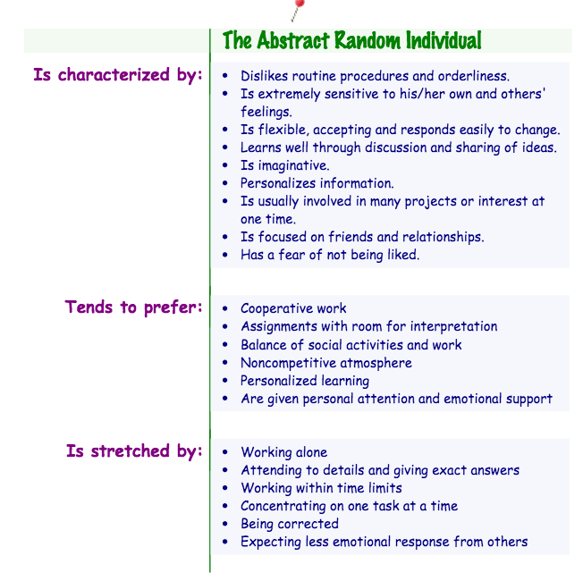

My Thinking Style: Abstract Random
Learning to Learn to Learn to Learn
2015-05-16
I'm Abstract Random? OKAY!
I took the Gregorc Thinking Style test and I was on the border of abstract and concrete random, leaning more towards abstract random. From the site, Abstract Random thinkers "organize information through reflection, and thrive in unstructured, people-oriented environments." One thought: YES. This immediately captures how I feel about myself and my unintentional working/thinking style. I say unintentional because I've never really been very aware of it, until looking more into this test and its results. It makes perfect sense to me now in retrospective--I've always felt the most comfortable in unstructured situations where I can experiment and learn on my own or by observing and interacting with people around me.
Being self-aware of my thinking style will be a big advantage while I work with others at DevBootcamp. I think it's also a good idea to learn about the other thinking styles, and to learn what everyone else's style is, so I can take that into account when I interact with them.
Because I think it's a great explanation and summary, I'm going to steal Jaclyn's (another DBC grasshopper!) idea and display an image that has a clear list of characteristics (found here):
So far, my experience has seen its fair share of success and challenge. I was really at a high point with the HTML/CSS since I already felt somewhat comfortable with the topics, and even though I struggled through concepts with CSS positioning, I felt confident that it was a topic that over time I could master with enough practice.
Now as I start with Ruby, the biggest struggle has been a couple of the exercises this week that took a bit longer to figure out than others. This included the count_between and leap_year challenges, both of which I worked on for 30 minutes or more with a pair. Though at the end we came to a solution, it instilled a fear that maybe I could not figure out more challenging problems in the future. Taking a step back, I know this type of mindset is just temporary, and that I am capable of solving more difficult problems, particularly if I am proactive about analyzing how I learn and planning a strategy for attacking problems.
I notice my thinking style of Abstract Random in the way that I imagine the solution and what I would need to do to reach it. I see both strengths and weakness in this method, because I struggly with pseudocoding. I have everything in my head and I want to start right away, but I know doing the pseudocode is a really important step that I have to get used to doing.
I also wonder if maybe a thinking-style is not necessarily the best learning-style for someone, and to actually learn you need to recognize what your thinking-style is and how to use it to your advantage, while also trying out some of the other thinking-styles too.
Here's some strategies I'm going to try:
- Pseudocode every challenge, no matter how simple I think it is
- Start to reflect more on how I approach different problems
- Look into different methods of approaching problems
Keep the Mind Growing
What really got me with the Carol Dweck Fixed and Growth Mindset article is the idea of steady, deliberate practice. Combine this with the idea of creating a habit by starting small, I can see how this leads to great success in people. I've done this a couple of times in my past, where I start from scratch and with the determination to complete small steps at least every day, I start seeing results for my efforts. The result is a continual increase of understanding and practice, and seeing myself improve from day 1. The growth mindset is something I've personally worked towards my entire life. I'm an active learner and I constantly seek input, in any subject. I know this is my natural state, but I've also felt the burn out from this mindset. In the past, I've seen myself able to keep this mindset up for long stretches of time, but every now and then I need to take a break and step back. I think this is all wrapped up in the same process, because by taking a break I give myself a chance to reflect and digest everything I've just input, and let my brain do some relaxed exploration of the new information. I think I've just gotten a bit off topic from the fixed vs growth mindset, but it's totally fine! I'm still reflecting on my learning and thinking style! I'm going forward, always progressing as much as possible, little by little, every day, just doin' what I can.